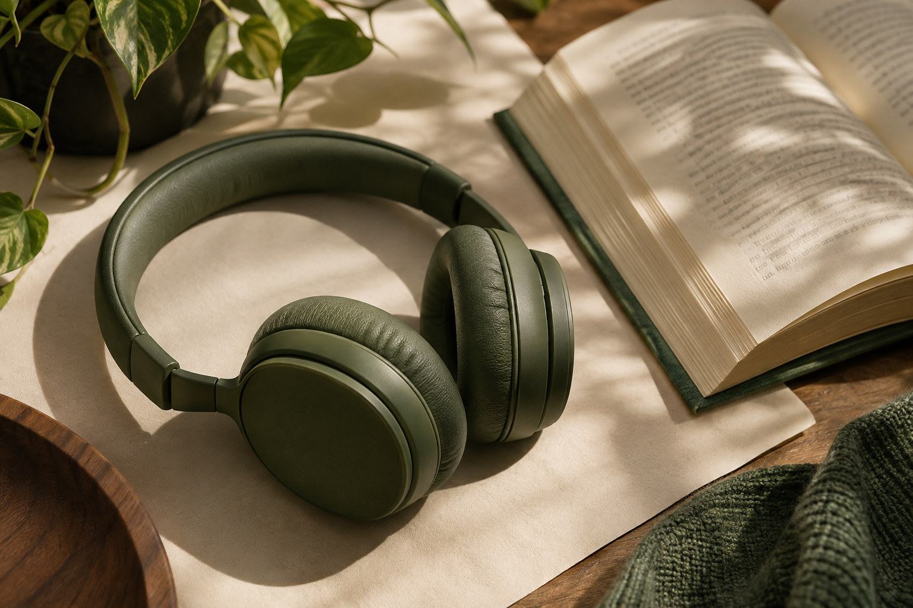

Texto de ejemplo · Editalo a tu gusto
LEÉ CON LOS OÍDOS
Las palabras,
a tu ritmo.
Eso que querés leer, ahora podés escucharlo.
Pegá un texto, acomodate y dejá que suene.
Un ratito para vos.
✧ Menos pantalla. Más imaginación.Sin cuentas. Sin distracciones.
TUS PALABRAS, A MANO
Biblioteca
Volvé a esos textos que vale la pena escuchar.
HACÉ TUYO ESTE ESPACIO
Ajustes
Pequeños detalles para escuchar a gusto.

Tu forma de leer
La voz, el tono y la velocidad se recuerdan automáticamente.
Un espacio privado
Tus textos se guardan solamente en este navegador. No necesitás crear una cuenta.
Las voces locales funcionan sin internet. Algunas voces del sistema necesitan conexión.